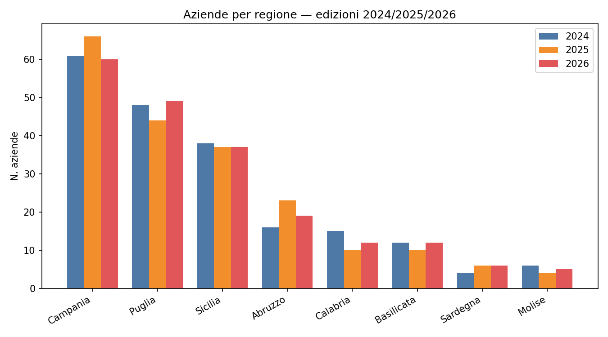
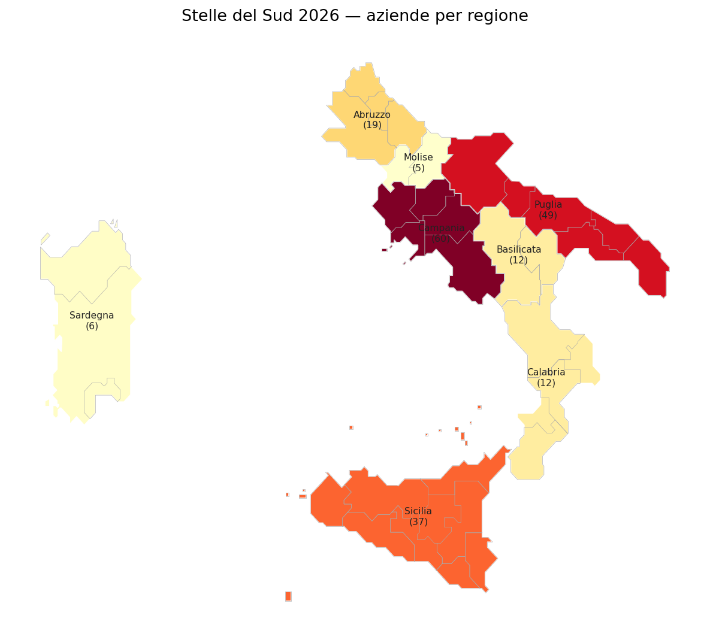
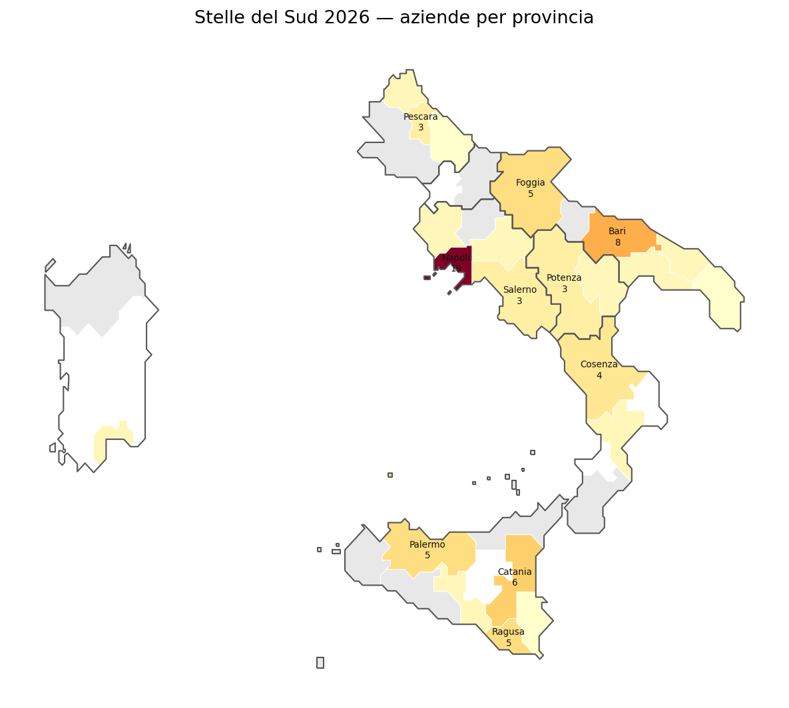
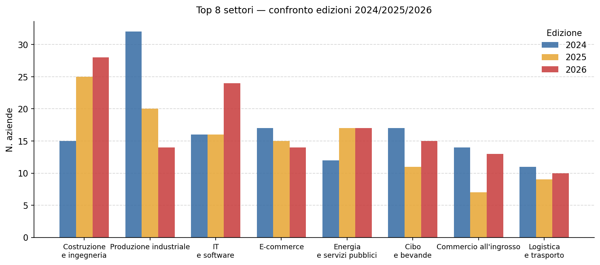
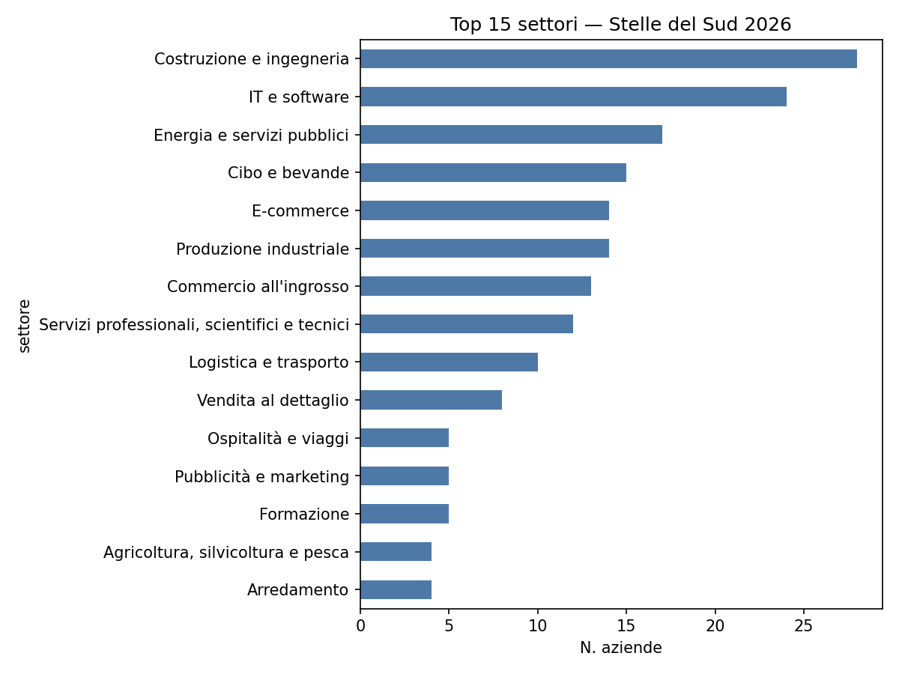
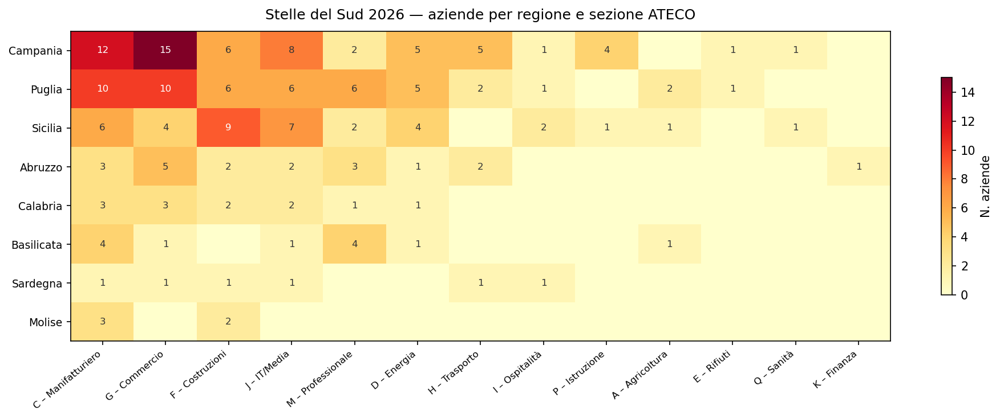
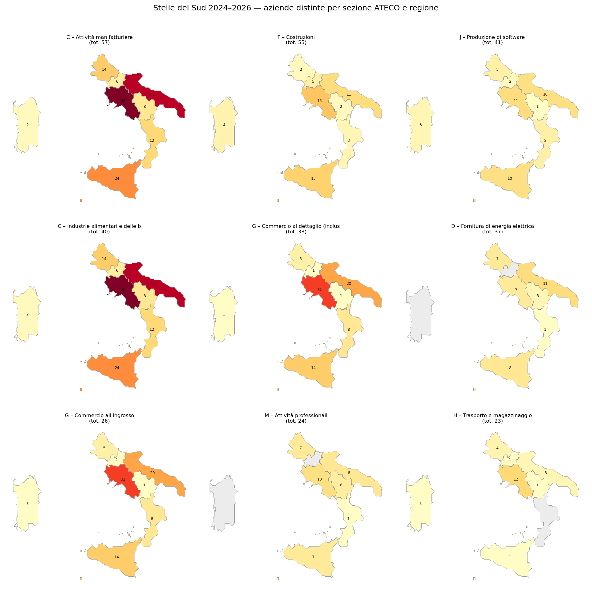
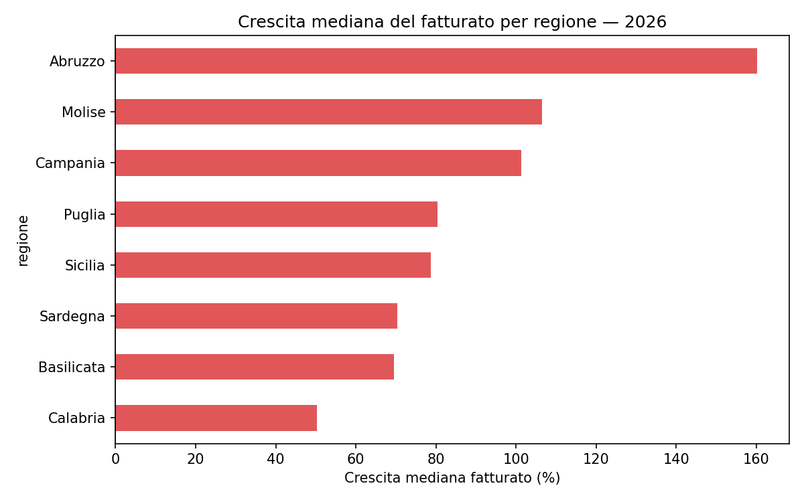
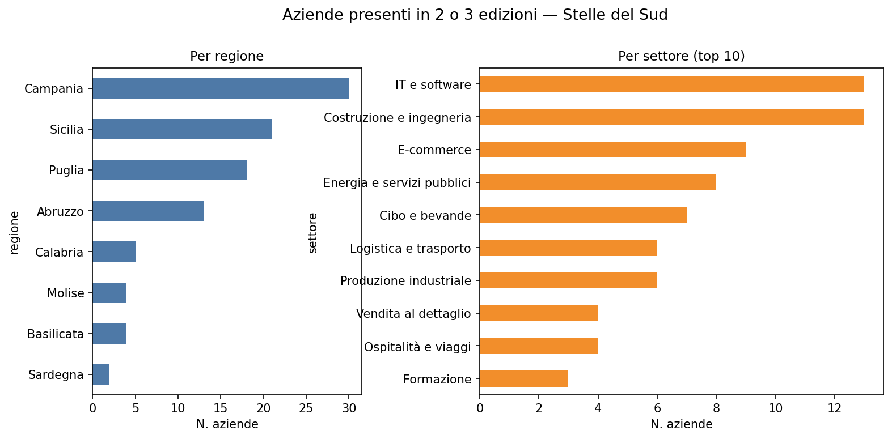

Stelle del Sud 2024–2026
Le 200 aziende italiane del Mezzogiorno a più alta crescita
Paolo Volterra ![]()
Analisi delle 200 aziende italiane del Mezzogiorno a più alta crescita di ricavi, dipendenti e immobilizzazioni nelle edizioni 2024, 2025 e 2026 della classifica “Stelle del Sud” de Il Sole 24 Ore Lab24. Il documento esamina la distribuzione geografica, la composizione settoriale, le performance di crescita e le aziende ricorrenti nelle tre edizioni.
imprese, crescita, Mezzogiorno, settori, territorio
1 Lettura complessiva del triennio
Le tre edizioni della classifica “Stelle del Sud” restituiscono un’immagine del Mezzogiorno imprenditoriale più articolata di quanto il titolo suggerisca. Non c’è una storia unica di crescita diffusa: ci sono almeno tre velocità distinte, una dipendenza strutturale dalla spesa pubblica che merita attenzione, e un nucleo duro di imprese che resiste alla selezione triennale.
1.1 Un ecosistema concentrato, non diffuso
Il dato più rilevante non è chi cresce, ma dove. Campania, Puglia e Sicilia coprono stabilmente il 73% delle stelle in tutte e tre le edizioni. Non è solo un effetto dimensionale: è che la capacità di generare imprese ad alta crescita nel Mezzogiorno è ancora fortemente polarizzata su tre poli urbani — Napoli, Bari, il triangolo Catania-Palermo. A livello provinciale, Napoli da sola vale quasi il 10% dell’intera classifica 2026.
Il resto del Sud — Calabria, Basilicata, Molise, Sardegna — è marginale e stabile nella sua marginalità. Nessun segnale di catching-up nel triennio.
1.2 La costruzione cresce, ma è un segnale ambiguo
Il passaggio di Costruzione e ingegneria da 5° settore nel 2024 (15 aziende) a 1° nel 2026 (28 aziende) è il cambiamento strutturale più visibile del triennio — quasi un raddoppio. La domanda è se si tratti di crescita strutturale o di un effetto PNRR.
Con alta probabilità è in larga parte PNRR e Superbonus edilizio. Il Mezzogiorno assorbe una quota sproporzionata dei fondi di coesione europei e dei piani infrastrutturali nazionali. Queste aziende crescono perché c’è un flusso straordinario di commesse pubbliche. Quando i fondi si esauriranno (2026-2027), questa componente potrebbe sgonfiarsi altrettanto rapidamente. Le edizioni future della classifica saranno il test.
1.3 L’IT è il segnale strutturale più solido
IT e software cresce da 16 aziende nel 2024-2025 a 24 nel 2026. Diversamente dalla costruzione, questa crescita non dipende da una leva pubblica temporanea: dipende da mercato, competenze, scalabilità. Il fatto che IT domini anche tra le 45 aziende ricorrenti (7 su 45, il settore più rappresentato) è il segnale più importante del dataset: le imprese digitali del Sud non sono fiammate isolate, ma mantengono performance elevate nel tempo. Napoli in particolare sta producendo scale-up visibili, con un ecosistema universitario che comincia a tradursi in imprenditoria strutturata.
1.4 I tassi di crescita si normalizzano
La crescita mediana del fatturato scende da 118% (2024) a 133% (2025) a 83% (2026). Il calo non indica necessariamente un rallentamento reale: le prime due edizioni misuravano trienni che includevano il rimbalzo post-COVID 2021-2022, straordinario per definizione. Con la base di confronto normalizzata, l’83% riflette una crescita più ordinaria — ma 83% di crescita mediana in tre anni rimane un numero elevato per qualsiasi contesto geografico.
1.5 L’Abruzzo come anomalia positiva
160% di crescita mediana — il doppio della media, il triplo della Calabria. 19 aziende in classifica, con 6 tra i ricorrenti (sproporzionato rispetto alla sua dimensione). L’Abruzzo ha un tessuto industriale diverso dal resto del Sud — automotive, logistica adriatica, manifattura diffusa — ed è economicamente più vicino al Centro-Nord che al Mezzogiorno tradizionale. I dati lo confermano.
1.6 La Calabria come caso critico
50% di crescita mediana, trend decrescente nel numero di aziende (15→10→12), nessun settore trainante identificabile. La classifica misura in modo netto ciò che i dati macroeconomici già descrivono: la Calabria rimane la regione strutturalmente più fragile del Sud.
1.7 Il nucleo duro delle 45
Il 22,5% di aziende presenti in tutte e tre le edizioni è un dato che merita attenzione. Non si tratta di eventi fortunosi o rimbalzi contabili: queste imprese mantengono alta crescita per tre anni consecutivi. È un campione piccolo ma reale di imprenditoria meridionale strutturalmente competitiva. Il fatto che IT, e-commerce e agroalimentare dominino questo nucleo dice qualcosa sulla specializzazione duratura: digitale, food, logistica sono i settori con la traiettoria più solida.
1.8 Le tre velocità e il rischio sistemico
Il Mezzogiorno imprenditoriale di questa classifica si muove a tre velocità distinte:
- Polo dinamico — Campania (IT, manifattura), Puglia (agroalimentare), Abruzzo: crescita reale, settori diversificati, ricorrenza elevata
- Polo costruzioni — Sicilia e parte di Campania: numeri buoni nel triennio, ma con un punto interrogativo al 2027-2028 quando il ciclo PNRR rallenta
- Periferia immobile — Calabria, Basilicata, Sardegna, Molise: poche aziende, bassa crescita, nessun segnale di convergenza
Il rischio sistemico più leggibile nei dati è la dipendenza dalla spesa pubblica come motore di crescita. Costruzione e ingegneria più Energia e servizi pubblici sommano 45 aziende nel 2026, il 22,5% del totale. Sono entrambi settori fortemente esposti al ciclo della spesa pubblica. Sottrarre il PNRR dalla fotografia cambierebbe significativamente il quadro.
2 Distribuzione geografica
La Campania si conferma la regione più rappresentata in tutte e tre le edizioni, con valori compresi tra 60 e 66 aziende. Puglia e Sicilia occupano stabilmente le posizioni 2 e 3, mentre si osservano variazioni più marcate nelle regioni minori: l’Abruzzo cresce da 16 (2024) a 23 (2025) per poi stabilizzarsi a 19 nel 2026; la Calabria segue il percorso inverso, scendendo da 15 a 10 e risalendo a 12. Molise e Sardegna si attestano entrambe su valori contenuti (5–6 aziende), con oscillazioni minime.

Aziende per regione — edizioni 2024/2025/2026
Nella sola edizione 2026, la Campania conta 60 aziende (30% del totale), seguita da Puglia con 49 (24,5%) e Sicilia con 37 (18,5%). Le tre regioni coprono dunque oltre il 70% delle stelle. Le restanti cinque regioni si dividono i 35 posti rimanenti: Abruzzo 19, Calabria e Basilicata 12 ciascuna, Sardegna 6, Molise 5.

Stelle del Sud 2026 — distribuzione per regione
A livello provinciale, Napoli guida con 19 aziende, davanti a Bari (8) e Catania (6). Foggia, Palermo e Ragusa si attestano a 5. Il dato più rilevante è l’elevata dispersione: oltre la metà delle province presenti conta una sola azienda, segnale che la capacità di generare imprese ad alta crescita è ancora fortemente concentrata nei capoluoghi maggiori.

Stelle del Sud 2026 — distribuzione per provincia
3 Composizione settoriale
3.1 Evoluzione dei settori nelle tre edizioni
Il confronto tra le tre edizioni rivela cambiamenti strutturali significativi. La Produzione industriale era il settore dominante nel 2024 con 32 aziende, ma è scesa a 20 nel 2025 e fuori dalla top 5 nel 2026. Al contrario, la Costruzione e ingegneria ha più che raddoppiato la propria presenza, da 15 nel 2024 a 25 nel 2025 e 28 nel 2026, diventando il settore guida. L’IT e software ha registrato una crescita sostenuta (16→16→24), confermandosi il secondo polo di specializzazione del Mezzogiorno digitale. L’Energia e servizi pubblici è stabile intorno a 17 aziende nelle ultime due edizioni.

Top 8 settori — confronto edizioni 2024/2025/2026
3.2 Composizione 2026
Nel 2026, i 200 posti sono distribuiti su 25 settori distinti. La Costruzione e ingegneria guida con 28 aziende (14%), seguita dall’IT e software (24, pari al 12%). Energia e servizi pubblici si posiziona terza con 17, quindi Cibo e bevande (15) ed E-commerce (14). I primi cinque settori coprono complessivamente il 49% del totale, mentre la coda è lunga: 11 settori contano 5 o meno rappresentanti.

Top 15 settori — Stelle del Sud 2026
3.3 Distribuzione settoriale per regione
La heatmap per sezione ATECO evidenzia la diversa vocazione produttiva delle regioni. La Campania mostra la maggiore varietà, con presenze rilevanti in manifattura (C), costruzioni (F), commercio (G) e servizi informatici (J). La Puglia è forte nell’agroalimentare: guida la sezione C con 10 aziende, in buona parte riconducibili all’industria alimentare. La Sicilia eccelle nelle costruzioni (9 aziende), mentre l’Abruzzo, nonostante le dimensioni contenute, è ben rappresentata in IT e logistica.

Heatmap settore × regione — 2026
Le mappe per sezione ATECO mostrano come la concentrazione geografica vari sensibilmente per comparto. Il commercio al dettaglio e l’e-commerce sono polarizzati in Campania (17 aziende) e Sicilia (6); le costruzioni hanno un baricentro più meridionale, con Campania, Sicilia e Puglia equiparate; l’agroalimentare è invece il dominio pugliese, con 14 aziende contro le 9 campane.

Distribuzione geografica per settore ATECO
4 Performance e crescita
La crescita mediana del fatturato nel triennio 2026 è pari all’83,2% sul totale delle stelle. La variabilità regionale è però molto elevata: l’Abruzzo registra il valore più alto (160,1%), seguito da Molise (106,4%) e Campania (101,4%). La Calabria si posiziona all’estremo opposto con una crescita mediana del 50,3%, circa un terzo di quella abruzzese. Puglia e Sicilia si collocano attorno all’80%, in linea con la mediana generale. Occorre tenere presente che i dati si riferiscono al triennio di riferimento di ciascuna edizione, non a un confronto anno su anno.

Crescita mediana del fatturato per regione — 2026
5 Aziende ricorrenti
Su 600 osservazioni complessive (200 per edizione), 45 aziende sono presenti in tutte e tre le edizioni, rappresentando il 22,5% di ciascuna classifica. Altre 74 compaiono in almeno due edizioni. La Campania esprime il nucleo più stabile (14 aziende sulle 45), seguita da Sicilia (10) e Puglia (7). Abruzzo e Basilicata contribuiscono rispettivamente con 6 e 4 aziende, un dato rilevante rapportato alle loro dimensioni assolute nella classifica.
Per settore, l’IT e software guida con 7 aziende ricorrenti, seguito dall’E-commerce (6) e da Cibo e bevande (5). Logistica e trasporto e Costruzione e ingegneria contribuiscono con 4 ciascuno. La persistenza dell’IT conferma che le imprese digitali del Mezzogiorno tendono a mantenere tassi di crescita elevati nel tempo, non solo a episodi isolati.
Tra le singole aziende, ToIT Group (Sicilia, ospitalità) è quella che ha scalato più posizioni nel ranking, passando dalla posizione 2 nel 2024 alla prima nel 2025. Iocoli Porte e Finestre (Basilicata, produzione industriale) ha migliorato consistentemente il proprio rank, da 24 a 17. Rico Costruzioni (Campania), Ag Car Europe (Campania, logistica) e Pelusi Autotrasporti (Abruzzo) completano il gruppo dei più stabili sul podio.

Aziende presenti in 2 o 3 edizioni